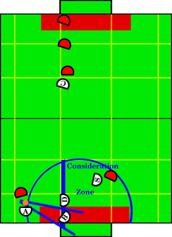

Play: Tight Defense
Description:
Tight defense is the main defensive play when the ball is far on our side
of the field. The defender and the blocker work in tandem to form a wall,
while the aggressor attempts to gain possession of the ball. The special op
defender blocks a pass around the wall, while the creator awaits an
opportunity to gain possession of the ball upfield and convert to a goal.
Illustration:

Positions Present:
- Blocker
- Defender
- Special Op Defender
- Aggressor
- Creator
Position Strategies:
Blocker:
- If ball is in goalie box -> Follow recover and grab ball strategy as
described in Cage Defense. The only difference
is that the blocker should only recover balls in the goalie box, and should not leave
the goalie box.
This is BlockerGainPosessionSkill
- Else, Cut Down Angle limiting blocker
to be inside the goalie box. Cut down alone. Since goalie box depth is
approximately. 4 cm larger than robot diameter, split remaining uncovered 4cm in
half, 2cm by post and 2cm on forward edge, thus not allowing a ball to
squeeze by the post, doing a better job block the cross crease pass, and
avoiding getting stuff on the post when moving into and out of position.
The position to cut down the angle can be hard-coded to be 2cm in front of
the proper goal post (based on which post is closer to the ball).
This is TightDefenseBlockerSkill
NOTE:TightDefenseBlockerSkill will call BlockerGainPosessionSkill if the condition holds.
|
Defender and Special Op Defender:
Draw a semi-circle with center being the center of our goal-line, the
ball being on the perimeter. Draw a vertical line with the same
y-component as the blocker's y-coordinate. Draw the shadow lines from the
ball on either side of the blocker. Subtract the shadow and the small area
of the semi-circle cut off by the vertical line and consider the remaining
piece (see figure).
- If 1 opponent is in the consideration zone, send special op
defender to handle shot block on this opponent, and the defender to the
default position, matching the y coordinate of the blocker and falling back
as far as possible without going into the defense zone (see figure).
- If 0 opponents are in the consideration zone, send the
defender into the default position as in the 1 opponent scenario. Send the special op
to the default position on the opposite
side of the field (widthwise) than the ball. Go in the middle of the sweet sector,
defense zone. Split angle between there and the ball and there and the center of the opponent goal.
This keeps the special op defender out the way,
while allowing him to quickly move forward and assist the aggressor once
we obtain possession of the ball, and makes it impossible for the opponents to score off the special op with a bounce shot into our goal.
All of the above should be covered by calling TightDefenseDefenderSkill
|
Aggressor:
- Ball Free -> approach ball
- Opponent Has Ball -> strip ball
- Once in possession, play will transition to single assist offense.
The above covered by calling AcquirePosessionSkill
|
Creator:
- Get open for a upfield pass, preferably on the same side of
the field as the ball (width wise)
Call CreatorLookForwardPassSkill
|
Transitions:
|
One of our robots (not our blocker) has possession of the ball. |
|
Ball is in the death zone and the middle sector. |
|
Ball is in middle sector and defense zone OR is upfield from
defense zone.
|
Position Switching:
- Aggressor, Defender, SpecialOpDefender
|
- If special op closer to defender's destination than the defender is, switch.
- If special op closer than aggressor to ball, switch.
|
|